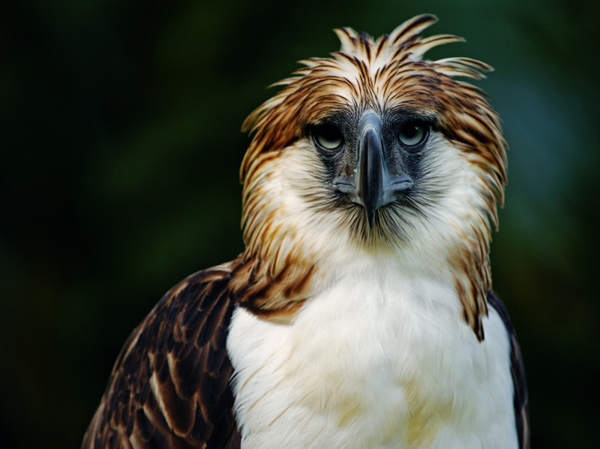
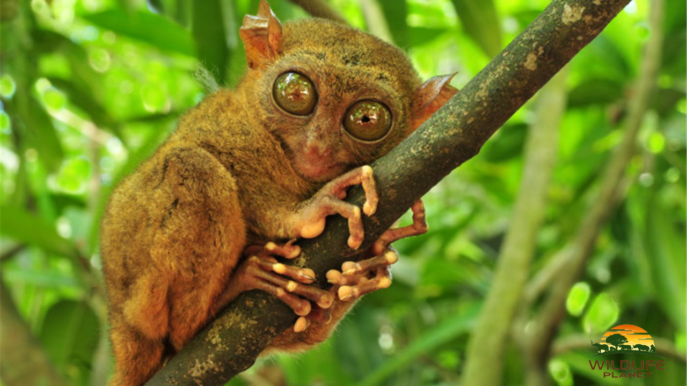
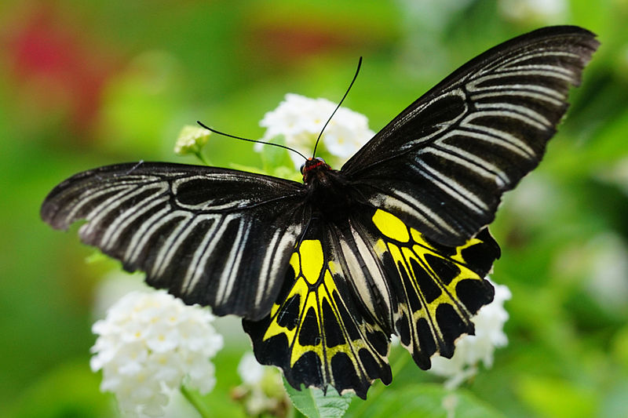
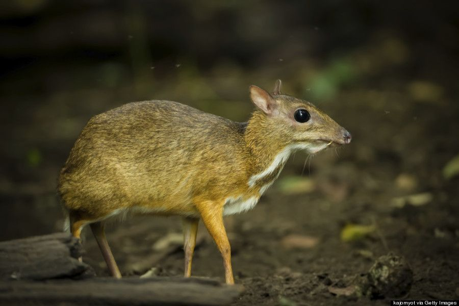

| Animal Name |
Species |
Lives in |
Image |
| Philippine Eagle |
Accipitridae |
Philippine eagles shun both open forests and grasslands in favour of living in deep woodland. Both lowland woods and densely forested regions in higher elevations. |
 |
| Tarsier |
Tarsius Syrichta |
Even in surrounding areas of villages, it can be found in low scrubby vegetation and thrives in both old-growth and secondary forests. |
 |
| Magellan Birdwing Butterfly |
Troides Magellanus Magellanus |
Closed habitats, mossy forests and Submontane Dipterocarp Forest |
 |
| Celestial Monarch |
Hypothymis Coelestis |
Tropical moist lowland forests up to 750 masl. |
 |
| Philippine Mouse-Deer / Balabac Chevrotain / Pilandok |
Tragulus nigricans |
During the day, they typically take shelter in the dense primary and secondary forests and avoid movement. At sundown, they will wander into mangroves and more open areas to feed. |
 |